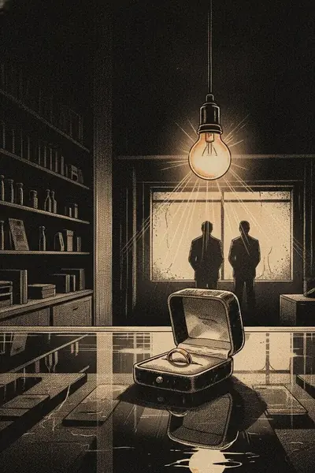
Night Pawn
At 3 a.m. a stranger pawns a wedding ring. Abner buried it with his wife three years ago.
Serialized noir · English & Hebrew · 16+
24 original stories across eight shadowy genres. Each chapter takes about ten minutes, and an illustrated interlude waits between chapters to pull you onward.
First chapter free. $8.99 a month, or $49.99 a year with a 7-day free trial.
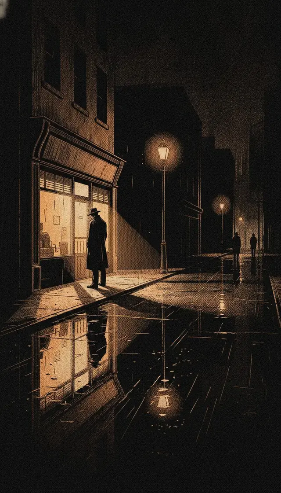
Clean text in the size and typeface you choose, with three night-friendly color themes. At the end of each chapter, a few illustrated panels with narrator captions, then the next chapter.
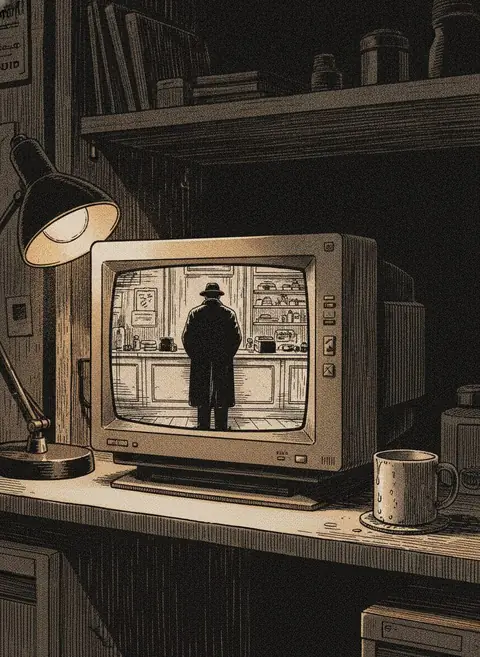
Read a ten-minute chapter. Your place is saved automatically.
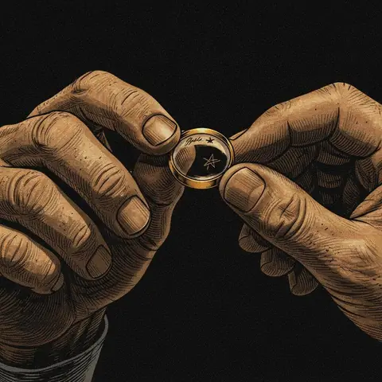
Illustrated panels with narrator captions. You decide when to move on.
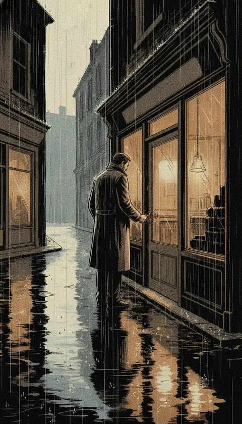
Keep going, even without an internet connection.
Every story is a complete arc of 6 to 8 chapters. Pick a shelf:
Content notes: Non-graphic violence, death, crime, suspense

At 3 a.m. a stranger pawns a wedding ring. Abner buried it with his wife three years ago.
Every night at 2:14 a silent passenger rides Doug's cab to the same corner. One night she leaves him a receipt from the worst night of his life.
Twenty years after three witnesses sent her husband to prison, each of them brings Ruth a coat with the same black handprint on the shoulder.
Content notes: Psychological suspense, manipulation, emotional distress
Michael gets an out-of-office reply from his own address: Don't try to find me. He never wrote it.
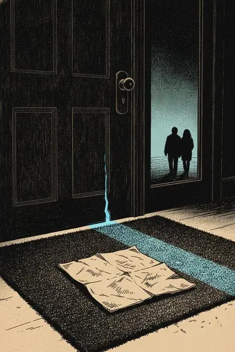
Every morning Noa finds a diary page on her doormat, in her own handwriting, dated tomorrow. Then it happens.
After the accident Anna remembers five rooms in her studio. She comes home to four, and a fiancé who says there were always four.
Content notes: Death, off-page murder, suspense
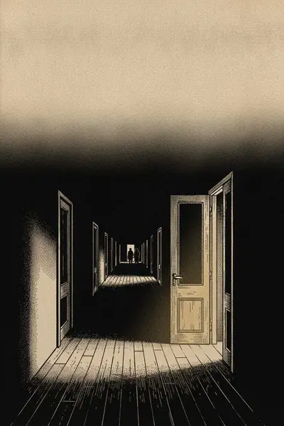
A storm, a blackout, an inn above the sea. At 1 a.m. Judith sees a stranger on the stairs. By morning everyone swears no one came.
In the station's lost-property box, a recorder still running: two voices planning a murder for Friday, 11:40 p.m., by Track 11.
The puzzle king's last crossword reads like an attendance sheet for the night he died. The answer across the middle is his daughter's name.
Content notes: Supernatural horror, death, grief, frightening imagery
Ronnie records a minute of silence in an empty house. On playback: dishes, laughter, and a girl calling her name.
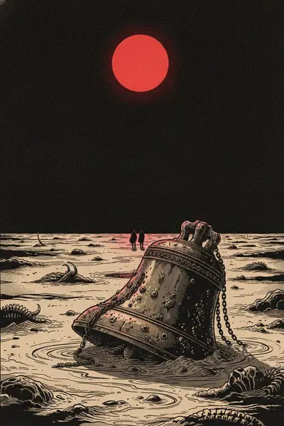
The sea pulls back a mile and leaves a church bell standing on the sand. It rings only when Lia comes near.
Jordan joins the town choir. After every rehearsal, someone in town forgets someone they love.
Content notes: Non-graphic violence, betrayal, suspense
Lena is a dentist, a wife, a mother, and for twenty years a sleeper waiting for one name. On Monday it shows up in her appointment book.
A protected witness slips phrases into his testimony that only his interpreter understands: the secret language her father invented for her.
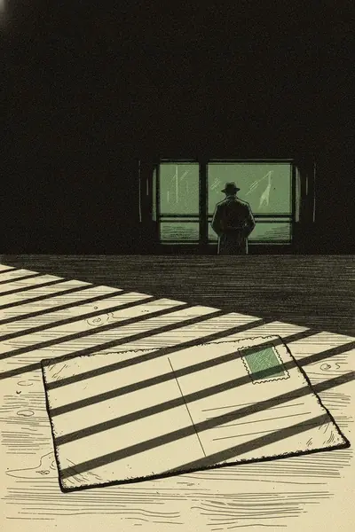
For eleven years Hannah has mailed coded postcards to her handler, and his orders keep coming back. Then she learns he died eight days after they met.
Content notes: Oppression and control, distress, non-graphic violence
Ingrid rents out her nights and sleeps through them. One morning she wakes with a bruised knuckle and laces tied in a knot she doesn't know.
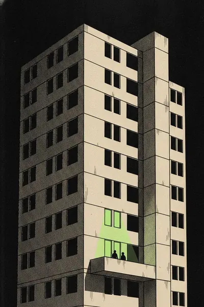
In a city where speech is metered by the minute, Rona saves 47 minutes to testify for her neighbor. Overnight, someone buys them all.
Taxes are paid in memories. Bettina audits a man who remembers only the last thirty days, and someone has paid his levy for thirteen years.
Content notes: Abusive relationships, threats, non-graphic violence
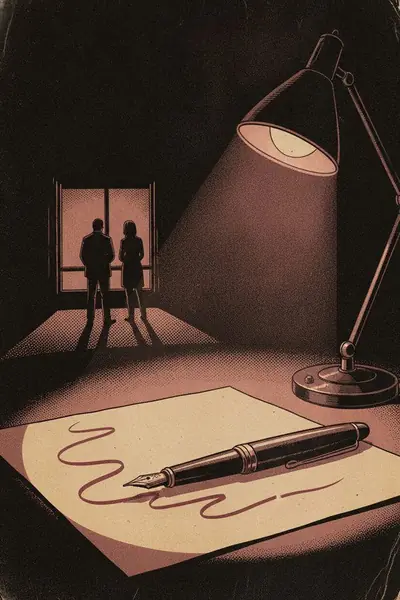
On their wedding night, at 12:38, Ada watches her husband forge her signature. She has known for a year. She married him to find out why.
Her father sends Lila to play piano in his enemy's club and steal a deed from the safe. On her first night, the owner hums her mother's lullaby.
Letter 14 from a stranger, to a woman who vanished, lands in Paige's mailbox. At 3 a.m. she answers as her. Minutes later, letters 1 to 13 are on her doormat.
Content notes: Death, disappearance, trauma, suspense
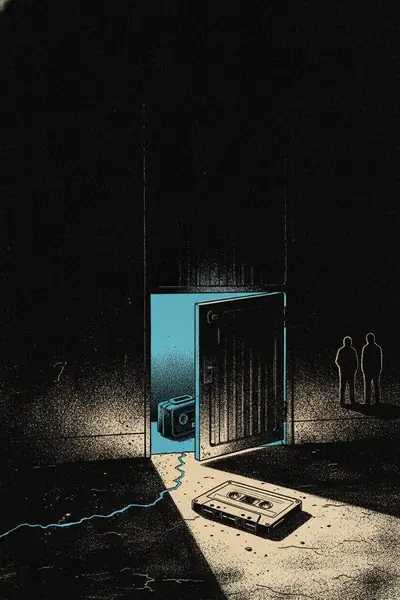
A podcaster buys an abandoned storage unit in the town she's from but never visits. Inside: fourteen unlabeled tapes, and a woman confessing to a burial no one knew about.
Thirty years ago, the night a camp boathouse burned, a counselor walked into the woods and was never seen again. Now the file is reopened, one document at a time.
Twenty years after a teenager's death, a true-crime forum reopens the case. A new user knows details nobody published.
One subscription unlocks every story and chapter, including new chapters as they are released.
$49.99per year
$8.99per month
U.S. prices plus applicable sales tax. In Israel: ₪249 a year or ₪34.90 a month, VAT included. Elsewhere the price follows Apple's price tiers and is shown in your currency.
The subscription renews automatically until you cancel. To avoid a charge, cancel in your Apple Account settings at least 24 hours before the current period or trial ends.
Family Sharing is supported, and the subscription works on every device signed in with the same Apple Account.
Full terms: Terms of Use, Section 9.
No ads. No tracking. No account.
There are no ads in the app, and it never reads your device's advertising identifier.
No analytics tools, no cookies, no pixels, on this website too. Nothing is used for tracking.
Nothing to sign up for. Reading progress and settings stay on your device.
Only an anonymous ID and purchase data, not linked to your identity, go to RevenueCat to manage the subscription and produce aggregate subscription metrics. Details in the Privacy Policy.
VoiceOver in English and Hebrew, Dynamic Type including the larger accessibility sizes, Reduce Motion, text contrast of at least 4.5:1 and 44-point touch targets. Target: WCAG 2.0 level AA (Israeli Standard 5568).
Read the full Accessibility Statement, including known limitations and how to reach us.
Nightfile (in Hebrew, אחרי חצות) is an iPhone and iPad app of 24 original dark stories told in short chapters, in English and Hebrew, with illustrated interludes between chapters.
The first chapter of one story is free; everything else needs a subscription: $8.99 a month or $49.99 a year in the U.S. (₪34.90 or ₪249 in Israel), and the annual plan starts with a 7-day free trial.
On iPhone or iPad go to Settings > your name > Subscriptions > Nightfile > Cancel Subscription at least 24 hours before renewal; you can also email us to cancel.
Nightfile is rated 16+ because the stories include mature themes, suspense, horror and non-graphic violence; there is no sexual content.
All 24 stories are available in English and in Hebrew, and you can switch languages at any time in the app's Settings.
Yes. The launch stories are built into the app, so you can read on a plane or anywhere without signal; buying or restoring a subscription needs a connection.
Almost nothing: there is no account, no ads and no tracking, and your reading progress stays on your device; RevenueCat receives an anonymous ID and purchase data, not linked to your identity, to manage the subscription and produce aggregate subscription metrics.
Yes. It fully supports VoiceOver, Dynamic Type, Reduce Motion and high-contrast text, and every illustrated panel has a text description; the Accessibility Statement lists known limitations.
We add new chapters and stories over time through app updates, and release dates are shown in the app; there is no fixed schedule.
Sign in with the same Apple Account, open the app and tap "Restore Purchases" on the subscription screen or in Settings.
More help on the Support page.